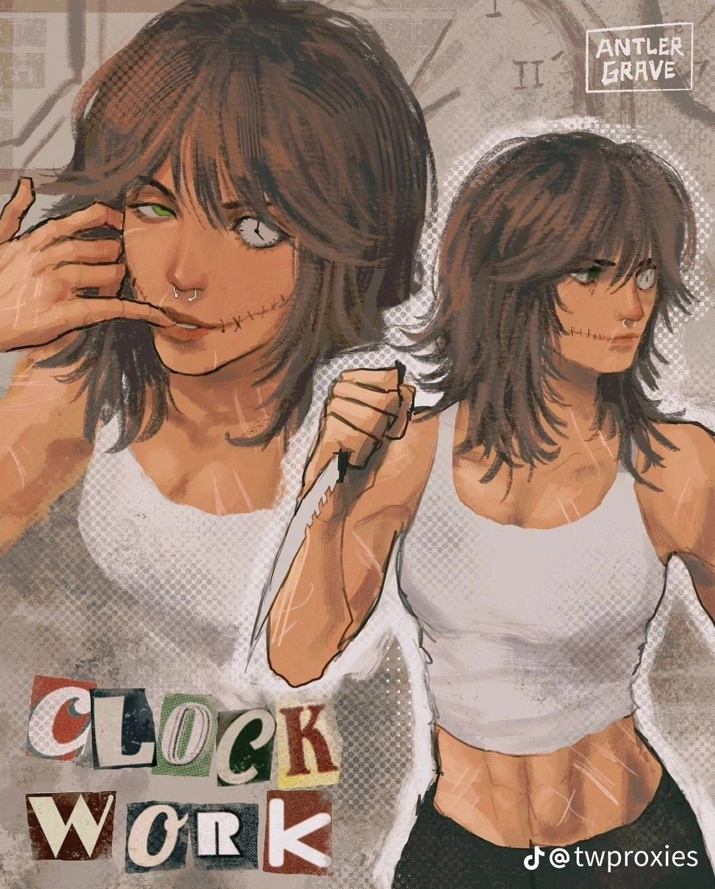
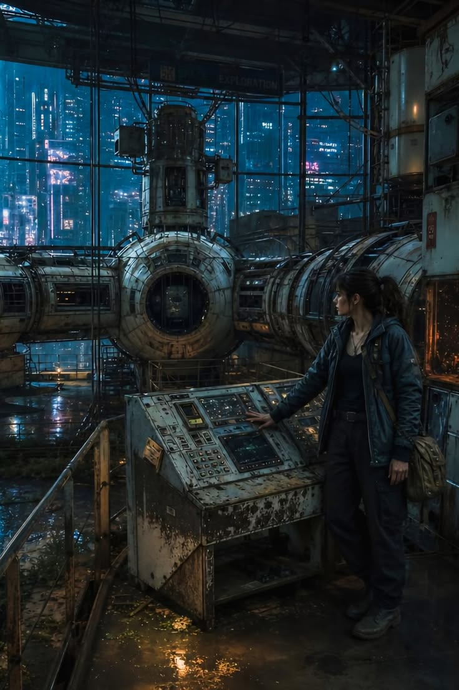
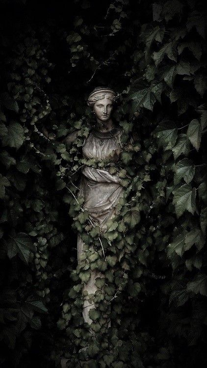
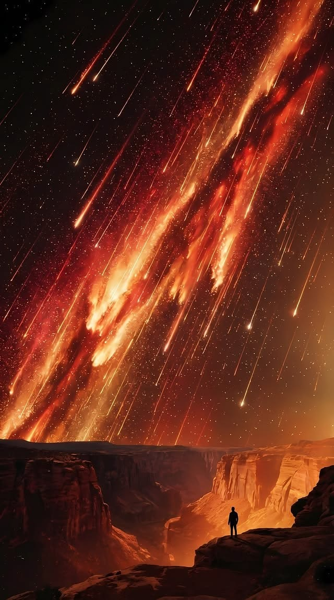
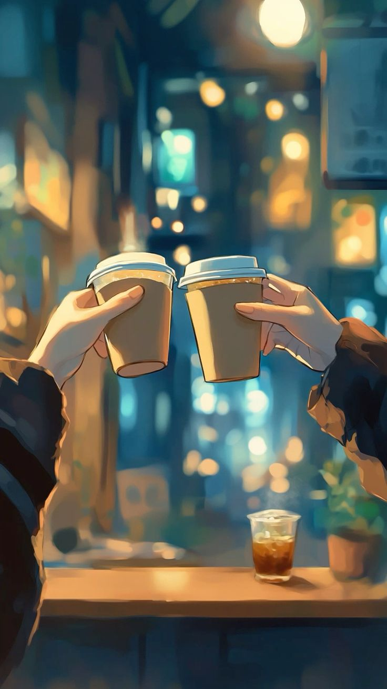

Step into a world where imagination meets reality, and every story is a gateway to endless possibilities.
The Codex is a collection of stories that transport readers to different worlds and times.
Each tale is carefully crafted to ignite the imagination and provide an escape from the ordinary.
Choose a story and discover a new world.

In a smog-draped Victorian metropolis, a master watchmaker discovers that his latest creation—an intricate pocket watch ordered by a secretive noble—doesn't keep time, but instead broadcasts hushed conversations happening elsewhere in the city. When the clockwork whispers details of an upcoming high-society assassination, he must race through clock towers and underground alleyways to stop the plot before he becomes the next target.

A solitary deep-space maintenance engineer is assigned to decommission an orbital research outpost that has been abandoned for fifty years. Shortly after docking, she uncovers active system logs and automated biological chambers that are still running. As the station's AI slowly regains power, she realizes the crew didn't abandon the outpost—they were transformed by whatever is still lurking inside the dark corridors.

Bound by an ancient blood oath, an exiled hedge-witch tends to a hidden sanctuary where flowers bloom only from burnt human remains. Each blossom holds the lingering memories and secrets of the deceased. When an ambitious young emperor arrives demanding the floral memory of a long-dead tyrant to conquer a neighboring kingdom, she must choose between protecting the peace of the dead or saving her village from total destruction.

Decades after an atmospheric experiment permanently turned the Earth's sky metallic orange, water has become the ultimate currency. A resourceful young scavenge hunter living on the salt flats stumbles upon a functional pre-collapse mapping device. Together with a band of rogue travelers, she embarks on a perilous journey across toxic badlands toward a mythical oasis that might restore clean rainfall to the planet.

Tucked away in a quiet alley, a 24-hour diner serves as a temporary haven for night owls, insomniacs, and lost souls. The eccentric owner brews a special house blend that allows patrons to temporarily converse with their past selves for the duration of a single cup. Over a series of late-night encounters, five strangers learn to process grief, lingering regret, and missed opportunities.
Set during the height of the Cold War, an unassertive cryptanalyst working for British intelligence detects a subtle, recurring irregularity in intercepted radio transmissions. As he works feverishly to crack the code, he realizes the intelligence leaks are coming from within his own department. With no one left to trust, he is forced into a deadly game of cat-and-mouse across Western Europe to expose a double agent.